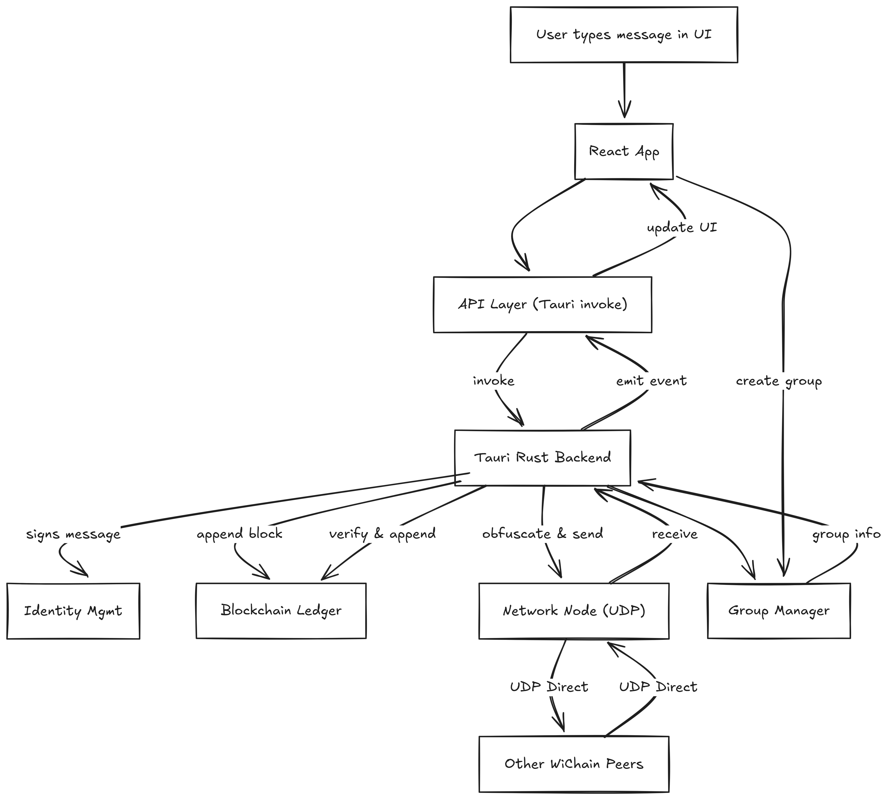

WiChain: Decentralized LAN Chat with Blockchain-backed History
Overview
WiChain is a peer-to-peer chat application for local networks (LAN) that combines a modern desktop UI (React + Tauri) with a tamper-evident blockchain ledger for chat history. It features:
- Direct peer and group messaging over LAN (UDP, no central server)
- Signed, verifiable messages (Ed25519)
- Blockchain-backed chat history (append-only, tamper-evident)
- Ephemeral group chats (deterministic group IDs)
- Simple obfuscation for message confidentiality (SHA3-512 XOR, not real encryption)
- Trust scoring for peers
This document provides a deep-dive into the technical implementation, architecture, and how blockchain is used in WiChain, with a step-by-step example.
Architecture
+-------------------+ +-------------------+
| Frontend (UI) | <----> | Tauri Backend |
| React + TS + CSS | | Rust + Tauri |
+-------------------+ +-------------------+
| |
| Tauri API (invoke/emit) |
v v
+-------------------+ +-------------------+
| Blockchain | | Network (UDP) |
| (Rust crate) | | (Rust crate) |
+-------------------+ +-------------------+
| |
+-------------------------------+
| wichain-core/types |
+-------------------------------+
Project Flow Diagram

Major Components & Files
1. wichain-blockchain
- block.rs: Defines the
Block structure (index, timestamp, previous hash, nonce, data, hash). Data can be plain text, a JSON array of signed messages, or a direct message object.
- blockchain.rs: Defines the
Blockchain struct (vector of blocks), methods for adding/validating blocks, saving/loading chain, and summarizing for UI.
- lib.rs: Exposes the blockchain API.
2. wichain-core
- message.rs: Defines
SignedMessage (UUID, sender, recipient, timestamp, content, Ed25519 signature). Handles signing, verification, and legacy message support.
- trust.rs: Implements local trust scoring for peers (0–100, decays over time, increases with valid data).
- lib.rs: Exposes identity management, key encoding/decoding, and re-exports message/trust logic.
3. wichain-network
- lib.rs: Handles peer discovery (UDP broadcast), direct messaging (UDP unicast), peer tracking, and exposes network events to the backend.
4. wichain-backend
- src-tauri/src/main.rs: The main Tauri backend. Handles identity, blockchain, networking, group management, message obfuscation, and exposes Tauri commands/events.
- src-tauri/src/group_manager.rs: Manages ephemeral groups (IDs are SHA3-256 hashes of sorted member pubkeys).
- src-tauri/src/crypto_utils.rs: Simple SHA512-based XOR for message obfuscation (not strong encryption).
5. wichain-backend/frontend
- src/App.tsx: Main React app. Handles UI state, peer/group selection, chat, onboarding, and real-time updates.
- src/lib/api.ts: API bindings for Tauri backend commands (identity, peers, groups, chat, reset).
- src/components/: UI components for chat, peer list, onboarding, group modal, etc.
Data Flow & Message Lifecycle
- Identity: On first run, a user identity (Ed25519 keypair + alias) is generated and stored locally.
- Peer Discovery: Each node broadcasts its presence over UDP. Peers are tracked by pubkey and alias.
- Sending a Message:
- User selects a peer or group and types a message.
- The message is signed (Ed25519) and wrapped in a
ChatSigned struct.
- The message is obfuscated (SHA3-512 XOR of both pubkeys, then base64) for confidentiality.
- The obfuscated message is sent over UDP directly to the peer(s).
- The clear (signed) message is appended to the local blockchain.
- Receiving a Message:
- Incoming UDP payloads are deobfuscated using the local and sender’s pubkeys.
- The backend verifies the signature.
- The message is appended to the local blockchain.
- The frontend is notified via a Tauri event.
- Groups:
- Groups are ephemeral, identified by a hash of sorted member pubkeys.
- Group messages are signed, obfuscated per member, and sent to all group members.
Blockchain in WiChain: How It Works
- Purpose: The blockchain is a local, append-only ledger of all chat activity. It provides tamper-evidence (not consensus or global state).
- Block Structure:
index: Block numbertimestamp_ms: Milliseconds since epochprevious_hash: Hash of the previous blocknonce: (unused, for compatibility)data: Opaque string (can be plain text, JSON array of signed messages, or direct message object)hash: SHA256(index || timestamp_ms || previous_hash || nonce || data)
- Genesis Block: The first block is always a “Genesis Block.”
- Adding a Block: When a message is sent or received, a new block is created with the message data and linked to the previous block by hash.
- Validation: The chain can be validated by checking that each block’s
previous_hash matches the actual hash of the previous block, and that each block’s hash is correct. Deep validation also verifies all embedded signatures.
- Persistence: The blockchain is saved as a JSON file on disk.
Example: Alice Sends a Message to Bob
- Alice types “Hi Bob!” and selects Bob as the peer.
- The backend creates a
ChatBody:
{
"from": "AlicePubKeyB64",
"to": "BobPubKeyB64",
"text": "Hi Bob!",
"ts_ms": 1712345678901
}
- The backend signs this with Alice’s private key, producing a
ChatSigned:
{
"from": "AlicePubKeyB64",
"to": "BobPubKeyB64",
"text": "Hi Bob!",
"ts_ms": 1712345678901,
"sig_b64": "...base64 signature..."
}
- The message is obfuscated using SHA3-512 XOR of Alice and Bob’s pubkeys, then base64-encoded.
- The obfuscated message is sent over UDP directly to Bob.
- The clear (signed) message is appended to Alice’s local blockchain as a new block:
{
"index": 2,
"timestamp_ms": 1712345678901,
"previous_hash": "...",
"nonce": 0,
"data": "{\"from\":\"AlicePubKeyB64\",...}",
"hash": "..."
}
- Bob receives the UDP packet, deobfuscates it, verifies the signature, and appends the message to his own blockchain.
- Both Alice and Bob now have a tamper-evident record of the chat.
Security Model
- Authenticity: All messages are signed (Ed25519). Recipients can verify the sender.
- Confidentiality: Messages are obfuscated (SHA3-512 XOR), but this is not strong encryption—just basic privacy on the LAN.
- Integrity: The blockchain ensures that chat history cannot be tampered with undetectably.
- Trust: Each node tracks trust scores for peers, decaying over time and increasing with valid signed data.
- Groups: Group IDs are deterministic hashes of member pubkeys. Group messages are obfuscated per member.
More Technical Details
Message Obfuscation (Confidentiality)
- WiChain uses a SHA3-512 hash of both users’ public keys to create a 64-byte mask.
- The message is XOR’d with this mask and base64-encoded before being sent over UDP.
- This is not strong encryption, but prevents casual snooping on the LAN.
Group Messaging
- Groups are ephemeral and identified by a deterministic hash of sorted member public keys.
- When sending a group message, the message is signed and obfuscated separately for each member, then sent directly to each peer.
Blockchain Validation
- Each block’s hash is computed as SHA256(index || timestamp_ms || previous_hash || nonce || data).
- The chain is validated by checking hash links and recomputing hashes.
- Deep validation also verifies all embedded message signatures.
Trust System
- Each peer is tracked with a trust score (0–100).
- Trust increases with valid signed data, and decays over time if the peer is inactive.
- Stale peers are dropped after a configurable period.
Security Limitations
- There is no global consensus or distributed ledger—each node maintains its own local blockchain.
- Obfuscation is not cryptographically secure; for real privacy, use proper encryption.
Development & Extensibility
- Rust Workspace: Modular crates for blockchain, core logic, networking, types, and backend.
- Frontend: Modern React + TailwindCSS, with Tauri for desktop integration.
- Easy to Extend: Add new message types, consensus, or real encryption as needed.
Quickstart
- Build the Rust workspace (
cargo build in wichain/).
- Build the frontend (
npm install && npm run build in wichain-backend/frontend/).
- Run the Tauri app (
cargo tauri dev in wichain-backend/).
- Open the app on two+ LAN devices and start chatting!
Credits & License
- Open source, student-friendly, and designed for learning and experimentation.
- Built with ❤️ using Rust, React, and Tauri.